Мовний компас · № 70–85
Прислівник
Учнівських аркушів: 16 · Матеріалів для вчителя: 3. Оригінальні PNG для друку.
Архів міститиме аркуші для учнів і наявні матеріали для вчителя. Дочекайтеся завершення підготовки.
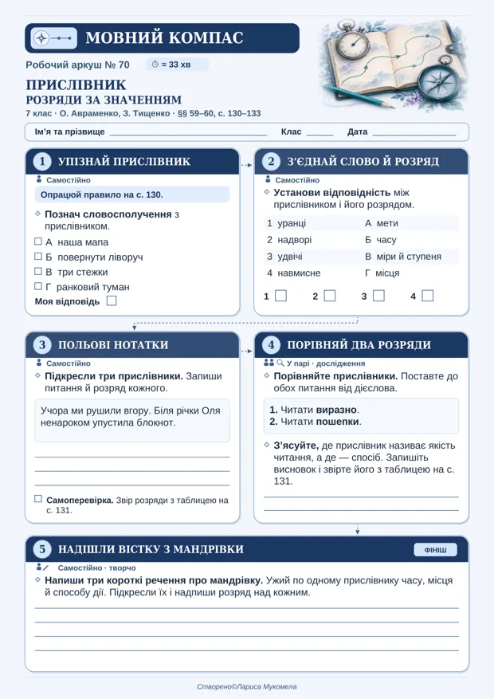
Аркуш № 70 · 7 класПрислівник. Розряди за значенням
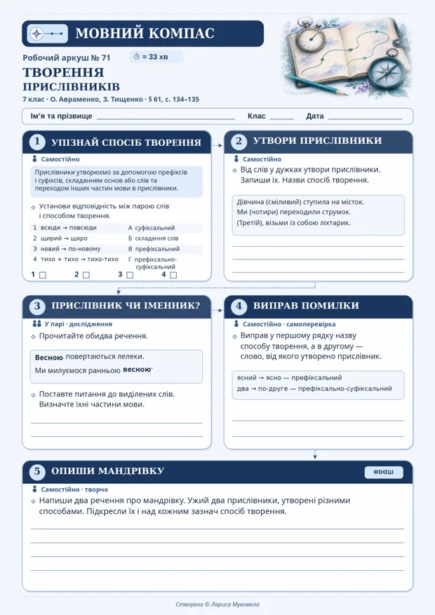
Аркуш № 71 · 7 класТворення прислівників
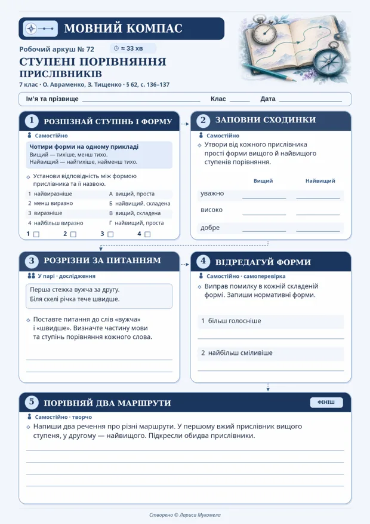
Аркуш № 72 · 7 класСтупені порівняння прислівників
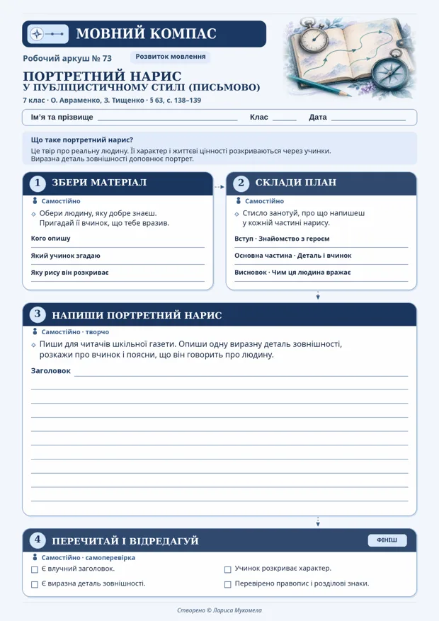
Аркуш № 73 · 7 класПортретний нарис у публіцистичному стилі
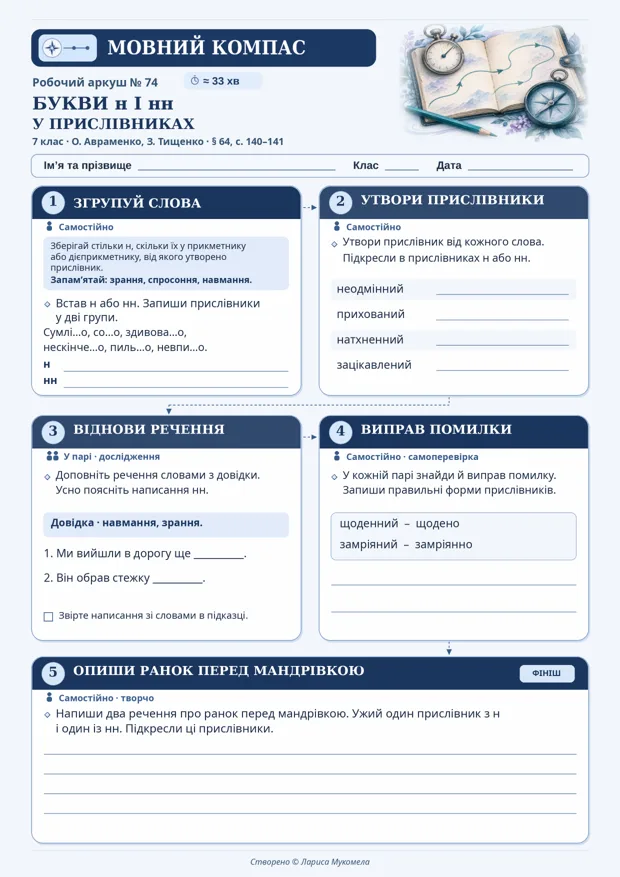
Аркуш № 74 · 7 класБукви н і нн у прислівниках
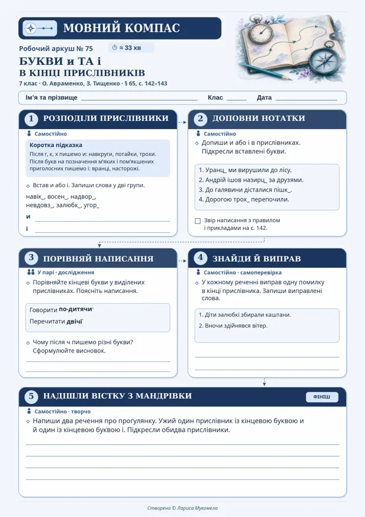
Аркуш № 75 · 7 класБукви и та і в кінці прислівників
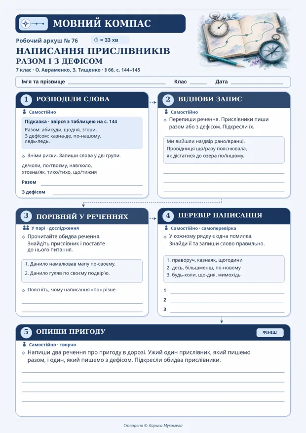
Аркуш № 76 · 7 класНаписання прислівників разом і з дефісом
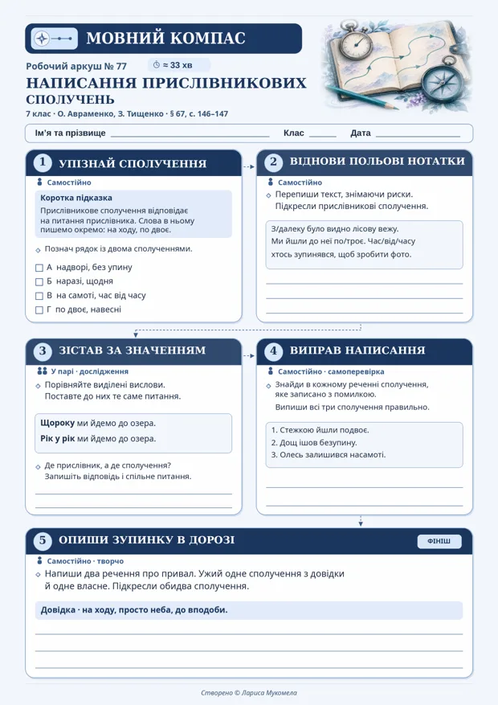
Аркуш № 77 · 7 класНаписання прислівникових сполучень
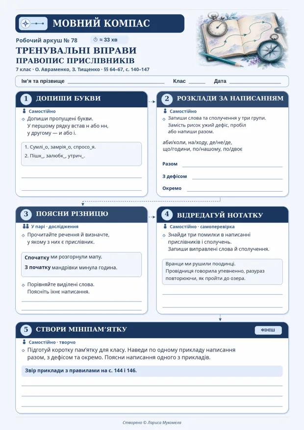
Аркуш № 78 · 7 класТренувальні вправи. Правопис прислівників
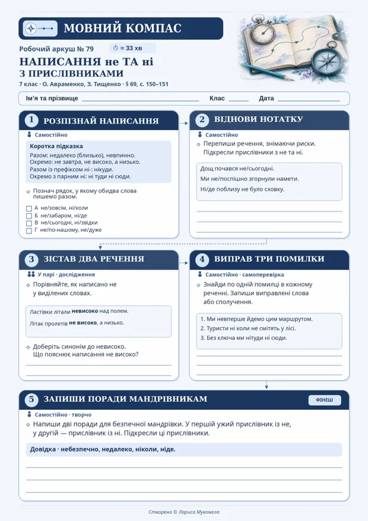
Аркуш № 79 · 7 класНаписання не та ні з прислівниками
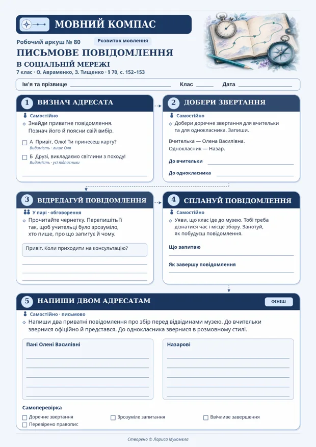
Аркуш № 80 · 7 класПисьмове повідомлення в соціальній мережі
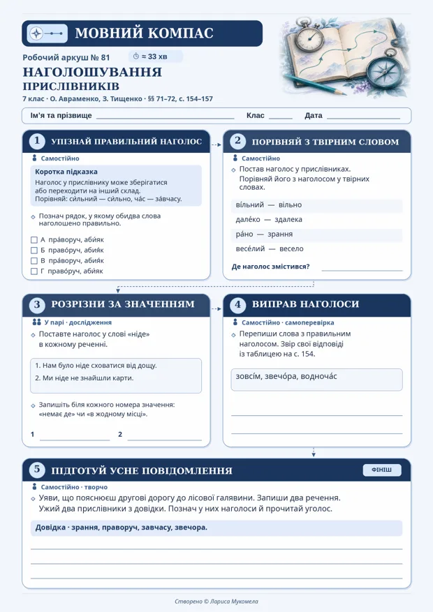
Аркуш № 81 · 7 класНаголошування прислівників
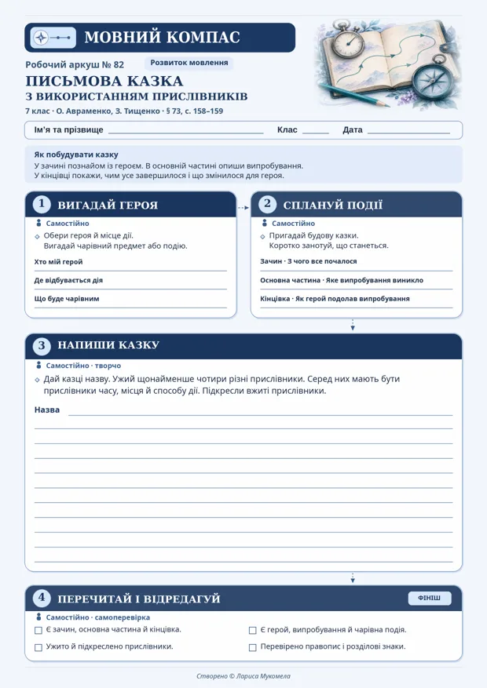
Аркуш № 82 · 7 класПисьмова казка з використанням прислівників
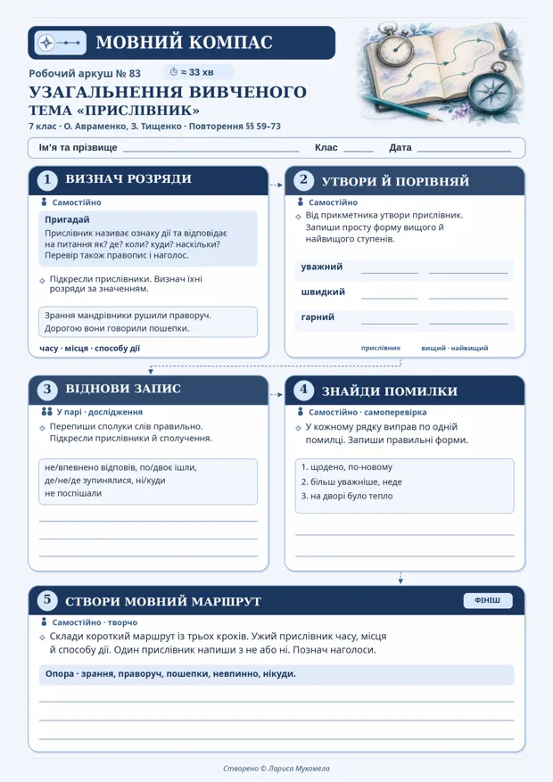
Аркуш № 83 · 7 класУзагальнення вивченого з теми «Прислівник»
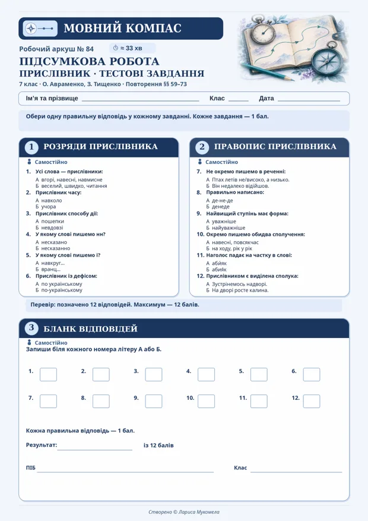
Аркуш № 84 · 7 класПідсумкова робота. Прислівник: тестові завдання
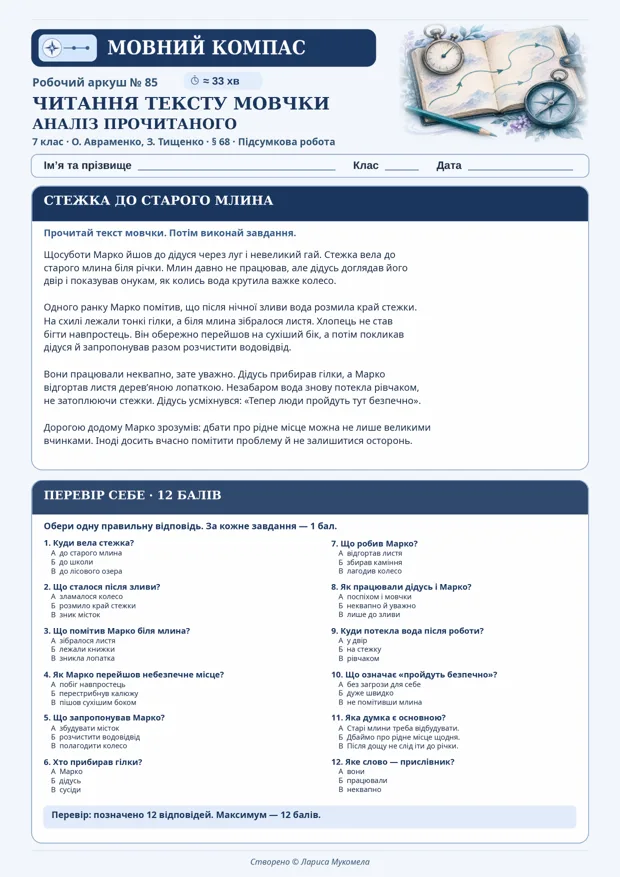
Аркуш № 85 · 7 класЧитання тексту мовчки. Аналіз прочитаного